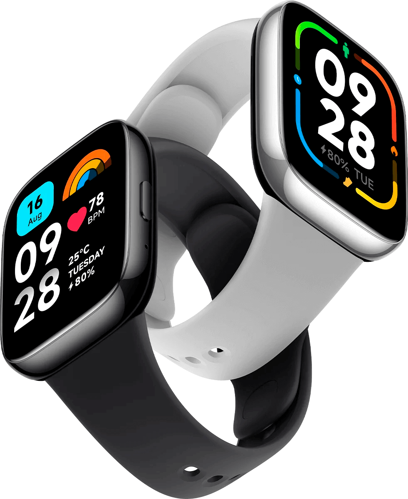
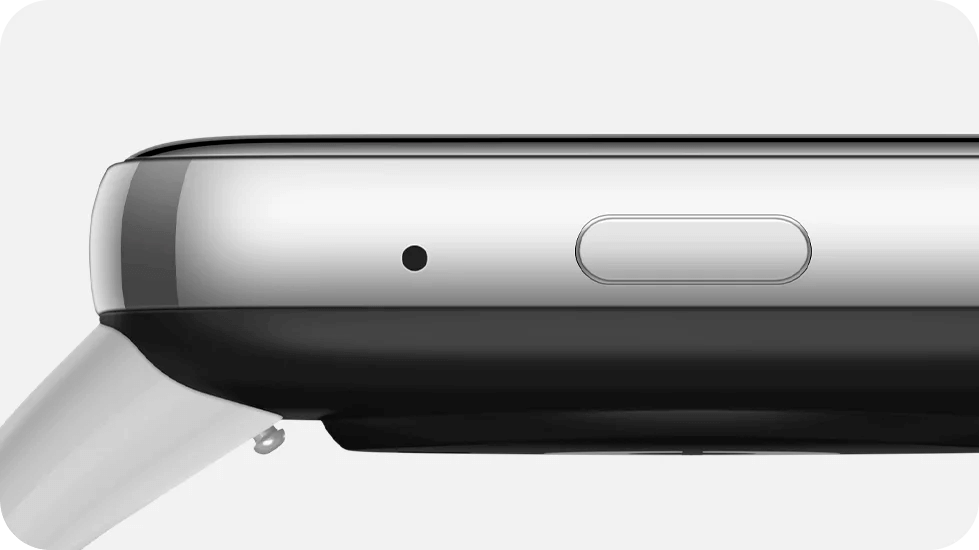

Tela ultra grande de 1,83 polegadas
Mais fácil de visualizar
A tela AMOLED de 1,83" representa 70% do corpo do smartwatch, permitindo que você veja tudo com clareza, desde notificações de mensagens até dados de
exercícios. O brilho máximo de 600 nits da tela permite uma solar intensa.
Mais de 200 mostradores
Mude de estilo livremente
Mais de 200 mostradores permitem que você altere os temas conforme seu estilo ou humor. É fácil mostrar sua personalidade única com o simples levantar-se de sua mão. *Alguns mostradores estão disponíveis apenas para smartphones Android.
Visual clássico retangular
Acabamento metálico moderno
O visual clássico retangular do smartwatch somado ao acabamento metálico em NCVM aprimora sua aparência refinada de duas cores, prata e cinza.
 Duas cores elegantes
Pulseira coloridas para combinação perfeita
Quatro opções de cores de pulseira, combinadas duas opções de cores do smartwatch, proporcionam uma experiência visual diferente e elegante.
*Pulseiras na cor verde e amarela devem ser adquiridas separadamente
Atenda chamadas sem tirar o smartphone do bolso*
Conecte seu smartwatch ao smartphone via Bluetooth. As chamadas telefônicas podem ser atendidas no relógio com apenas um toque. Quer esteja trabalhando ou fazendo exercícios, você pode levantar a mão para atender às chamadas telefônicas de uma maneira mais fácil e conveniente.
*As chamadas de voz de aplicativos de terceiros não são suportadas.
Mais de 100 modos de treino
Melhore seu condicionamento físico
O Redmi Watch 3 Active oferece mais de 100 modos de treino, incluindo 10 modos avançados*. Os sensores aprimorados monitoram e analisam seu corpo enquanto você pratica atividades físicas, mostrando seu progresso em tempo real.
*10 modos de treino avançados: corrida ao ar livre, esteira, ciclismo ao ar livre, caminhada, trekking, corrida em trilha, caminhada, elíptico, remo, pular corda.
Resistência à água de 5 ATM
Sem medo de se molhar
Seja para aproveitar um momento na piscina ou para mergulhar com snorkel, você pode usar o smartwatch o tempo todo. A classificação de resistência à água de 5 ATM* torna o uso diário mais livre de preocupações.
Detecção da saturação de oxigênio no sangue
Entenda mais sobre sua condição física
O sensor de oximetria óptica detecta a saturação de oxigênio no sangue e o alerta quando os níveis estiverem baixos, prestando atenção constante à sua saúde.
Monitor de frequência cardíaca durante todo o dia
Sempre atento a sua saúde
Ele pode monitorar sua frequência cardíaca 24 horas por dia, 7 dias por semana, para que você possa ver as alterações facilmente. Alertas serão enviados quando sua frequência cardíaca estiver alta, acompanhando sua saúde o tempo todo.
Monitoramento avançado do sono
Entenda em detalhes seu sono
O Redmi Watch 3 Active registra com precisão a duração e a condição do seu sono, monitorando continuamente o oxigênio no sangue e a frequência cardíaca em diferentes estágios, como sono profundo e sono leve, além de fornecer sugestões de melhoria da qualidade do sono de acordo com os dados captados.
Carregamento magnético
Bateria com longa duração de até 12 dias
Basta aproximar suavemente o smartwatch próximo ao carregador para encaixar automaticamente. Tecnologia exclusiva de baixo consumo para que você não precise se preocupar com a duração da bateria com até 12 dias de duração com uma única carga*.
Avisos legais
*Este produto não foi projetado como dispositivo médico, nem se destina a diagnosticar, curar ou prevenir qualquer doença. Todos os dados e valores medidos são apenas para referência pessoal.
*As imagens e modelos do produto, dados, funções, desempenho, parâmetros de especificação, interface do usuário e outras informações do produto nesta página são apenas para referência e podem diferir do produto real. A Xiaomi pode alterar essas informações. Para obter detalhes, consulte o produto real.
*A classificação de resistência à água de 5ATM (equivalente a uma profundidade de 50 metros debaixo d'água) significa que ele pode ser usado em piscinas, durante a natação em bancos de areia e outras atividades em águas rasas. Ele não é adequado para ser usado em chuveiros quentes, saunas ou durante mergulhos. Certifique-se de evitar o impacto direto do fluxo de água em alta velocidade durante esportes aquáticos. A função de resistência à água não é permanente e pode diminuir com o tempo.
*A impermeabilização de 50 metros atende às normas ISO22810: 2010. Ele foi aprovado na certificação e teste da TÜV SÜD (China) Co., Ltd. Número do relatório de classificação de resistência à água: 68.189.23.0048.02
*Não é possível garantir que o conteúdo e os recursos mostrados nesta página permaneçam permanentes e podem ser alterados como resultado de mudanças nos direitos autorais, condições comerciais ou técnicas. Em caso de alterações sem notificação individual, consulte o conteúdo e os recursos reais do produto.
*A menos que especificado de outra forma, os dados de teste deste produto são do Laboratório Xiaomi.
*O monitoramento de REM (movimento rápido dos olhos) precisa ser ativado no APP para monitoramento de alta precisão do sono
*Período de sono com menos de 3 horas de duração não mostram a distribuição dos diferentes estágios de sono.
*Período de sono com menos de 20 minutos não será registrado
*O aviso de frequência cardíaca e o alerta de baixo nível de oxigênio no sangue precisa ser configurado no aplicativo.
*Condições de teste de 12 dias do modo de uso pico para o Redmi Watch 3 Active: Carga completa, configuração padrão de fábrica, monitoramento de frequência cardíaca a cada 10 minutos, monitoramento de sono de alta precisão desativado, recebimento e exibição de 100 mensagens de notificação por dia, configuração de 3 alarmes por dia, levantar o pulso para acender a tela 200 vezes por dia, recebimento de 2 notificação de chamadas por dia, 15 minutos de chamadas Bluetooth por semana, 90 minutos de exercícios por semana e todas as outras configurações padrão.
*Modo de uso intenso: Condições de teste de 8 dias para o Redmi Watch 3 Active: Carga completa, configuração padrão de fábrica, monitoramento de frequência cardíaca a cada 1 minuto, monitoramento de sono de alta precisão avançado, recebimento e exibição de 200 mensagens de notificação por dia, configuração de 4 alarmes por dia, levantar o pulso para acender a tela 200 vezes por dia, recebimento de 4 notificações de chamadas por dia, 30 minutos de chamadas Bluetooth por semana, 150 minutos de exercícios por semana e todas as outras configurações padrão.
*Todos os dados de teste de duração da bateria são derivados do laboratório da Xiaomi. A duração da bateria durante o uso real depende de vários fatores, como configuração, operação, hábitos de uso e ambiente, e pode ser diferente dos resultados do laboratório.
*O Redmi Watch 3 Active vem com pulseira preta/cinza; as pulseiras de outras cores devem ser adquiridas separadamente. As opções de cores podem variar dependendo da disponibilidade de estoque.
*Algumas funções do dispositivo (incluindo, entre outras, lembretes de chamadas, lembretes de notificação etc.) exigem que o aplicativo seja executado em segundo plano e entre em vigor. Para obter instruções especificas, consulte os avisos no aplicativo.